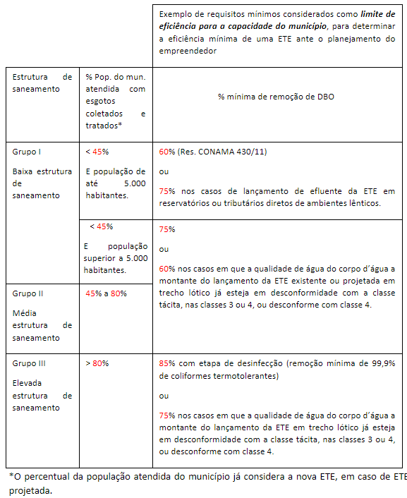

Coordenação de Qualidade de Água e Enquadramento - CQUAL
Superintendência de Estudos Hídricos e Socioeconômicos - SHE
Maratona de Enquadramento
Apresentação
A Coordenação de Qualidade de Água e Enquadramento (CQUAL/SHE) tem se dedicado a ampliar a discussão com diversas instituições sobre o Enquadramento de Corpos de Água em Classes Segundo os Usos Preponderantes (ECA) e seus normativos (Resoluções CONAMA nº 357/2005 e CNRH nº 91/2008) buscando aprimoramentos capazes de ampliar a implementação e efetividade deste instrumento de gestão da qualidade da água no Brasil.
Assim, surgiu a ideia de promover uma Maratona de Enquadramento na qual especialistas de diversas instituições compartilharão experiências e ideias em busca de soluções para superar os principais gargalos para a implementação do ECA.
Objetivo e Metodologia
Noso objetivo é exercitar a inteligência coletiva com o intuito de consolidar propostas para o aperfeiçoamento e fortalecimento deste instrumento.
A teoria da inteligência coletiva refere-se à ideia de que grupos de indivíduos podem colaborar e trabalhar juntos para atingir um nível de inteligência e capacidade de resolução de problemas que supera as habilidades de qualquer membro do grupo. Este conceito está enraizado em vários princípios-chave e tem sido explorado em vários campos, incluindo psicologia, sociologia, negócios e ciência da computação.
Princípios:
- Diversidade de conhecimentos: um grupo com uma ampla gama de competências e perspectivas pode muitas vezes resolver problemas de forma mais eficaz do que um grupo homogêneo.
- Descentralização: A tomada de decisões e a resolução de problemas são distribuídas entre os membros do grupo, em vez de serem centralizadas num único líder.
- Agregação de informações: A inteligência coletiva depende da capacidade de agregar e sintetizar informações de diversas fontes, muitas vezes facilitada pela tecnologia.
Exemplos de inteligência coletiva
- Nas organizações, a inteligência coletiva é usada para brainstorming, planejamento estratégico e solução de problemas.
- As colaborações científicas, muitas vezes abrangendo vários países e disciplinas, são exemplos de inteligência colectiva em ação.
- Projetos como a Wikipedia ou o desenvolvimento de software de código aberto demonstram inteligência coletiva no mundo digital.
Por que escolher a inteligência coletiva?
- Diversidade de perspectivas (mais insight e menos pontos cegos e vieses)
- Capacidade de resolver problemas aumentada (abordagem multidisciplinar, sinergia)
- Melhor tomada de decisão (conjunto mais rico de ideias e avaliação crítica)
- Rapidez na resolução de problemas - plataformas colaborativas, internet
Pré-requisitos para um ambiente propício à inteligência coletiva:
- Identificar problemas/desafios concretos que precisem de soluções práticas
- Identificar pessoas engajadas em resolver esses problemas/desafios
- Criar um ambiente aconchegante para que todos sintam-se dispostos a contribuir e dar o seu melhor (ambiente sem hierarquias desnecessárias, animado, com comida, liberdade/autonomia e algum conforto)
- Ter a mente aberta e tentar vários caminhos para resolver os problemas/desafios
Delineamento Metodológico
A maratona será formatada nos moldes de uma hackathon.
Etapas da Maratona
Desafios relativos à implementação do ECA serão propostos para a discussão em grupos de trabalho.
A formação dos grupos ocorrerá de forma voluntária, de acordo com o interesse dos participantes, e os participantes terão liberdade para intercambiar com outros grupos, caso haja interesse pessoal por outro tema ou discussão, desde que se mantenha um número mínimo de pessoas por grupo para que nenhum desafio seja “abandonado”.
Os grupos apresentarão suas propostas (pitch session), que serão discutidas com os demais participantes do evento.
As propostas serão consolidadas ao final do evento e estarão prontas para compor um produto a ser divulgado e encaminhado ao CONAMA e CNRH a fim de que o instrumento ECA seja efetivamente aprimorado. Também poderão ser escritos artigos em periódicos.
Local e Data
Agência Nacional de Águas e Saneamento Básico - de 5 a 7 de março de
2024
Setor Policial, Área 5, Quadra 3, Bloco L Sala de Capacitação da SAS
Programação
Terça-feira
Manhã
- 9h - Abertura e entrosamento
- 9:45 - Apresentação dos objetivos, metodologia e
programação: Apresentação do propósito do encontro e descrição
da metodologia e dos resultados esperados.
- 10:15 - Apresentação dos desafios do Enquadramento:
Apresentação e discussão sobre desafios ou problemas levantados nos
webinários sobre enquadramento e presentes na Nota Técnica em
elaboração. Estes desafios foram revisados e consolidados no último
webinário da série em 2023 de modo a deixar o grupo já familiarizado com
eles.
- 11:00 - Formação dos grupos e escolha dos desafios:
A formação dos grupos deve preferencialmente mesclar pessoas de
diferentes instituições. Cada grupo formará neste momento um grupo de
Whatsapp para o compartilhamento de ideias.
- 11h40 – Pausa para almoço : Há um restaurante na ANA.
Tarde
- 13h - Discussão intragrupos: Momento para os grupos
se apropriarem dos seus desafios, compartilharem experiências e
discutirem seus desdobramentos.
- 16h - Apresentação dos grupos: Cada grupo irá
apresentar seu desafio, da forma como ele foi interpretado internamente,
recebendo perguntas e comentários dos demais grupos ao final da
apresentação. Neste momento, será oferecido o QR Code dos grupos de
WhatsApp para que todos os participantes possam acompanhar o que está
sendo discutido e compartilhado.
- 17h30 - Encerramento do dia
Quarta-feira
Manhã
- 9h - Abertura: Balanço do dia 1 e apresentação da
programação e objetivos do dia 2.
- 9h30 - Revisão e discussão dos desafios:Os grupos
terão um tempo para revisar seus desafios e discutir ideias que possam
ter surgido no dia anterior ou que tenham sido registradas no WhatsApp
após o fim da sessão anterior.
- 10h30 - Formulação das propostas de aperfeiçoamento do Enquadramento (redação): Os grupos irão discutir e elaborar propostas pragmáticas ou relativas à legislação para vencer seus desafios.
- 11h40 – Pausa para o almoço: Há um restaurante na ANA.
Tarde
- 13h – Finalização da redação das propostas de
aperfeiçoamento do ECA.
- 14h - Apresentação das propostas e discussão coletiva (pitch session): Os grupos irão demonstrar como as propostas poderão ajudar a superar os obstáculos e vencer os desafios. Todo o material gerado será compartilhado no WhatsApp.
- 15h - Consolidação dos desafios e propostas:Neste
momento os grupos serão desfeitos e o todo o material gerado será
consolidado. Haverá a necessidade de um mediador e de uma equipe
executiva que faça a organização/redação/revisão das ideias.
- 17h30 - Encerramento do dia
Quinta-feira
Manhã
- 9h - Continuação da consolidação dos desafios e
propostas
- 10h30 - Apresentação dos resultados e
encaminhamentos
- 11h30 - Encerramento da maratona
Desafios do Enquadramento
Os desafios elencados para discussão na oficina emergiram de discussões dos webinários promovidos pela CQUAL em 2023, dos quais participaram representantes das Unidades da Federação convidados para a Maratona.
Desafio 1: Ausência de critérios para a definição dos usos “preponderantes” e necessidade de inclusão de ETEs como um uso preponderante, ainda que não este não seja um uso restritivo
Entende-se que usos mais restritivos estão associados à qualidade de água mais exigente existente em relação a sua destinação aos usos preponderantes. Geralmente entende-se que uso preponderante está associado aos usos mais importantes ou prioritários em termos quantitativos da demanda de uso. Todavia, quais são os critérios para definir o “uso preponderante”? Não foi definida na legislação essa interpretação, se em termos da vazão utilizada ou de sua importância socioambiental ou econômica.
Dentre as implicações de não haver uma conceituação clara de uso preponderante e possibilitar uma livre interpretação estão, por exemplo, a possibilidade de que se empreguem diferentes metodologias para considerar o conceito de usos preponderantes dentre diferentes estudos de enquadramento, bem como uma possível fragilização do atendimento a usos de interesses coletivos em uma proposta de enquadramento em particular, mesmo em ambientes participativos de instâncias colegiadas como os Comitês de Bacias Hidrográficas - CBHs, caso haja baixa representatividade especialmente de setores da sociedade civil, quer seja na forma de heterogeneidade do conhecimento ou conscientização da informação sobre os usos da água entre os setores.
Propõe-se, portanto, limitar a amplitude de sua interpretação, estabelecendo uma hierarquia de critérios para essa definição. Entende-se que em geral não é preciso definir ou identificar os usos preponderantes em cada processo de enquadramento, mas para o caso de ocorrer conflitos de qualidade de água, parece conveniente uma metodologia de hierarquização de critérios que possibilitem essa definição ou identificação de forma mais imparcial ou isonômica nos processos de enquadramento.
Com relação à necessidade de inclusão de ETEs do saneamento público como uso preponderante, ainda que este não seja um uso restritivo à qualidade de água, essa percepção advém de se observar que a maior parte das ações dos Programas de Efetivação do Enquadramento – PEE elaborados até o momento é composta por ações de coleta e tratamento de esgotos domésticos. Logo, se para o atingimento das metas de qualidade de água é necessário que se colete e trate esgoto doméstico, é factível que se compatibilize os usos pretensos com a classe possível de ser alcançada em trechos de diluição de efluentes de uma Estação de Tratamento de Esgotos – ETE.
As ETEs prestam uma relevante atividade de interesse público que contribui para a remoção de cargas poluidoras de uma bacia e consequente melhoria da qualidade da água, embora possa comprometer localmente (no ponto de lançamento) a qualidade da água daquele trecho. Logo, entende-se que o uso de diluição de efluente de uma ETE deve ser considerado sempre como preponderante, conquanto não seja restritivo, desde que a eficiência da ETE esteja compatível com a capacidade institucional do município (exemplo da tabela abaixo).

Caberia ao enquadramento discernir caso a caso quando um planejamento de ETE deve se sobrepor a outros usos existentes ou não.
Muitas vezes já se depara com a necessidade na realidade prática, de restringir usos existentes em trechos de corpos receptores de ETEs existentes.
Seja porque tais usos já estão incompatíveis com a qualidade de água existente no trecho (exemplo, irrigação de hortaliças em trecho de classe 2 ou balneabilidade em trecho de classe 3) de diluição dos efluentes de uma ETE existente e, nesses casos, se configura até uma situação de ir ao encontro da promoção da saúde pública, ao prevenir os usuários de contrair doenças de veiculação hídrica, vedando o uso que já está inadequado à realidade.
Seja porque, em algumas situações, mesmo com uma altíssima performance de eficiência de tratamento, uma ETE planejada não conseguirá atender aos requisitos de qualidade de uma classe muito exigente, como classe 1, por exemplo. Nesses casos, na ausência de alternativas locacionais do efluente, pode ser necessário que usos existentes, mesmo que mais restritivos à qualidade de água, sejam restringidos ante o planejamento da ETE. Por exemplo, poucos usuários de irrigação de hortaliças, que demandam o trecho em classe 1, com baixa expressão de captação hídrica ou relevância socioambiental da atividade em comparação aos benefícios da ETE para a bacia, a qual poderia ser compatibilizada para a diluição dos seus efluentes se admitida a classe 2 para o trecho em questão. E é claro que em tais situações, ao deliberar pela restrição de um uso legítimo como a irrigação de hortaliças, caberia ao CBH oferecer alternativas a esses usuários, como por exemplo, subsidiar com recursos da cobrança pelo uso dos recursos hídricos na bacia, a implantação de poços artesianos para esses poucos usuários como fonte alternativa de água para sua irrigação. Ou ainda, como outro exemplo, apoiá-los inicialmente em sua transição para irrigação de outro tipo de cultura compatível com a classe 2.
Cabe ainda ressaltar que o enquadramento é uma escolha consciente da sociedade e que, em algumas situações mais críticas, na ausência de capacidade de suporte do corpo d’água para a diluição de efluentes tratados e na ausência de alternativas locacionais, pode ser necessário abdicar de usos existentes ou pretensos em prol de um uso preponderante de utilidade pública e interesse coletivo, como uma ETE. É importante também que, sempre que possível, na verificação das alternativas locacionais para lançamento de efluentes de uma ETE se dê preferência a trechos já impactados na sua qualidade de água, em detrimentos a trechos cuja qualidade da água encontra-se mais conservada.
Perguntas norteadoras:
Como incluir a previsão na legislação, particularmente na Res. CONAMA 357/2005, de que ETEs sejam consideradas como uso preponderante, ainda que não sejam restritivas ao uso, considerando que atualmente o mero aceno de um interesse de uso pretenso demasiadamente restritivo a implementação futura de uma ETE pode vir a ser considerado?
Como evitar que tal previsibilidade também não seja mal utilizada, resguardando a manutenção de corpos d’água com qualidade de água mais nobre como classe 1 sempre que possível (mediante adoção da melhor tecnologia de tratamento disponível ou emprego de alternativa locacional) ou de corpos d’água onde já se tenha uma atividade turística de balneabilidade consolidada, por exemplo? Ou seja, como deixar uma orientação normativa que possibilite uma abordagem realista ante o “rio que podemos ter”, possibilitando a compatibilização entre os planejamentos de universalização do saneamento e de gestão eficiente e utilização racional dos recursos hídricos?
Desafio 2: Monitoramento para acompanhamento das metas do enquadramento
O Programa de Efetivação do Enquadramento – PEE deve prever a revisão e expansão das redes de monitoramento para acompanhar a evolução da qualidade da água durante o programa de efetivação. Além das condições da qualidade nos corpos de água, o acompanhamento da implementação das ações a partir do desenvolvimento de métricas e métodos também é crítico para dar transparência ao processo e garantir sua efetividade em face das metas estabelecidas.
Conquanto o ideal fosse a disponibilidade de um ponto de monitoramento de qualidade de água para cada trecho de enquadramento dos corpos d’água, isso não é factível devido aos custos envolvidos e ao fato de que a distribuição de pontos das redes de monitoramento geralmente segue lógicas associadas a trechos estratégicos com usos que se queiram preservar ou trechos críticos associados às cargas poluidoras existentes.
Perguntas norteadoras:
Setores usuários poderiam contribuir com este acompanhamento, por meio de seus dados de automonitoramento, aumentando o grau de participação no processo de enquadramento? É conveniente que seja prevista a possibilidade de participação social no monitoramento (ciência cidadã)?
Como fazer na ausência de pontos de monitoramento representativos? Os modelos calibrados utilizados em projeções de modelagem de qualidade de água empregadas durante o processo de enquadramento deveriam ser mantidos em bancos de dados acessíveis e com repasse da tecnologia de utilização aos órgãos gestores de recursos hídricos ou agências de água de forma a possibilitar a continuidade de seu emprego em projeções de qualidade de água nos trechos da bacia para acompanhamento das metas de enquadramento?
Como fazer para julgar a efetiva compatibilização ou desconformidade de dados de monitoramento com o enquadramento, se as metas são elaboradas em função de um conjunto de parâmetros de qualidade da água e das vazões de referência definidas para o processo de gestão de recursos hídricos, mas frequentemente parte dos monitoramentos de qualidade de água disponíveis para acompanhamento das metas no programa de efetivação do enquadramento não são realizados na vazão de referência ou abaixo dela, mas em vazões superiores, por vezes podendo ter cargas difusas associadas?
Como as informações do acompanhamento das metas de enquadramento deveriam ser divulgadas à sociedade, oriundas dos relatórios técnicos que devem elaborados pelos órgãos gestores de recursos hídricos, em articulação com os órgãos de meio ambiente, a cada dois anos, e que devem ser encaminhadas ao respectivo Comitê de Bacia Hidrográfica - CBH e ao respectivo Conselho de Recursos Hídricos, identificando os corpos de água que não atingiram as metas estabelecidas e as respectivas causas pelas quais não foram alcançadas, ao qual se dará publicidade (Art. 13 da Res. CNRH 91/2008)?
E como assegurar que tais informações sejam utilizadas para retroalimentar o processo de enquadramento, na revisão das ações para o alcance das metas ou quando da revisão do próprio enquadramento com novos horizontes de planejamento e metas progressivas? E quando metas do enquadramento não forem alcançadas porque se identifique que ações pactuadas para o alcance dessas metas não foram implementadas por setores responsáveis, por exemplo, devido a inércia ou atrasos em implementações de ações de saneamento de municípios, o que se poderia fazer? Acionar o Ministério Público, por exemplo? O que mais?
Desafio 3: Curvas de permanência de qualidade de água associada a frequências de conformidade de parâmetros ao enquadramento versus vazões de referência fixa ou sazonal
A modalidade de Curvas de permanência de qualidade de água associada a frequências de conformidade de parâmetros de referência ao enquadramento é uma abordagem que não está prevista no arcabouço legal, que considera apenas vazões fixas de referência com a possibilidade de se avaliar vazões sazonais. A vantagem dessa abordagem é que ela é mais realista, agregando aspectos associados a diferentes vazões sazonais. Dessa forma, ela pode ser empregada com mais flexibilidade no gerenciamento dos recursos hídricos e como ferramenta de planejamento e de acompanhamento da efetivação do enquadramento.
Entretanto, essa abordagem só é possível em bacias com séries históricas extensas. Como nem todas as bacias dispõem de séries históricas robustas de vazão concomitantes a dados de qualidade de água que possam subsidiar o emprego dessa abordagem, ela deve ser uma alternativa para quando for possível o seu emprego, mantendo-se também a flexibilidade do uso de vazões de permanência fixas ou sazonais em bacias em que aquela abordagem não for possível.
Essa abordagem ainda possibilitaria que o Programa de Efetivação do Enquadramento – PEE tenha ações relacionadas à gestão tanto de cargas pontuais quanto de cargas difusas, o que pode trazer uma maior maturidade ao controle de cargas poluidoras de uma bacia.
Perguntas norteadoras:
Como incluir em normativo da Res. CNRH nº 91/2008 a previsão dessa abordagem? Qual a frequência de conformidade dos parâmetros deveria ser estabelecida na legislação (80%, 75%) e qual a justificativa?
Quando seria conveniente a adoção dessa abordagem: mínimo histórico de dados de monitoramento, maturidade da gestão de recursos hídricos da bacia?
Desafios opcionais
Parâmetros prioritários por trecho ou sub-bacia
Participação dos atores da bacia